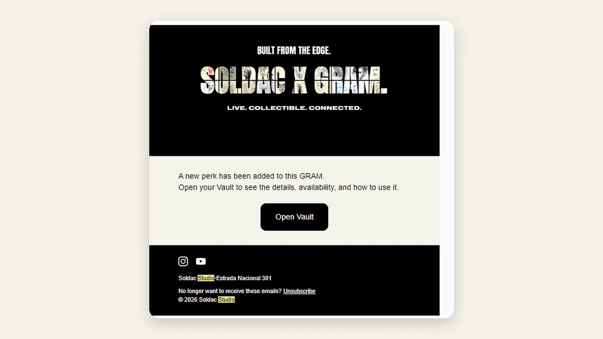
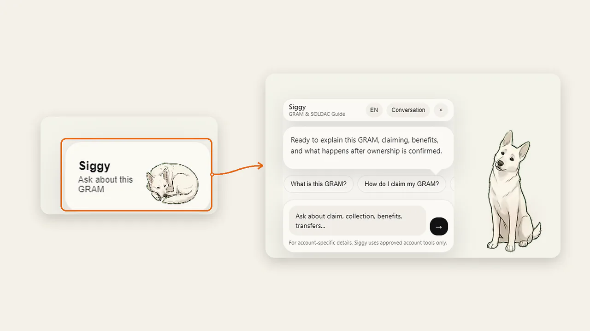

Notificaciones
Qué significan las notificaciones, dónde verlas y cómo se diferencian de las transferencias.
Qué son
Las notificaciones son actualizaciones de actividad relacionadas con tu cuenta GRAM y tu colección. Pueden indicar cambios, recordatorios o acciones que pueden requerir tu atención.
Dónde verlas
Puedes verlas en tu inbox o en el área de notificaciones de la plataforma.
Notificaciones vs transferencias
Una notificación es una actualización. Una transferencia es una acción específica de propiedad. Algunos eventos de transferencia pueden aparecer como notificaciones, pero no son lo mismo.
Guía visual


